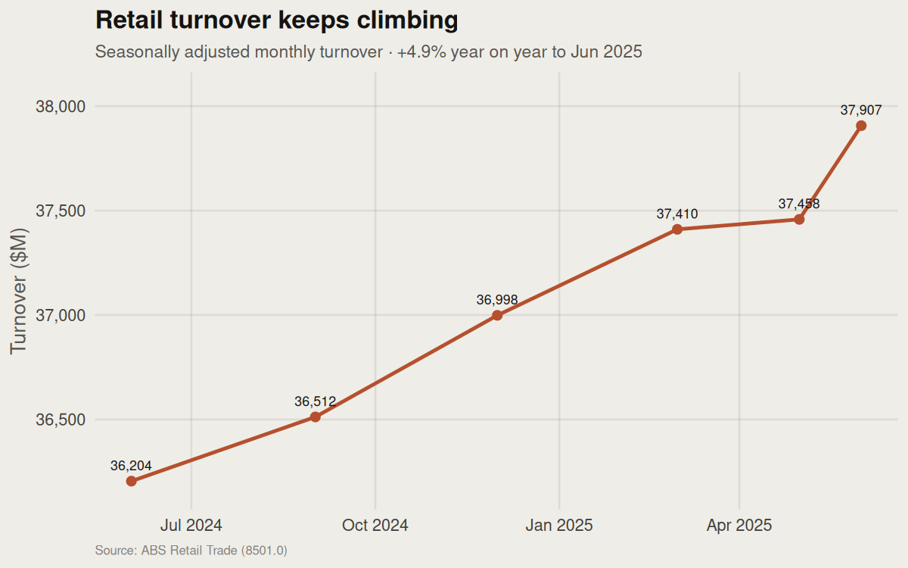
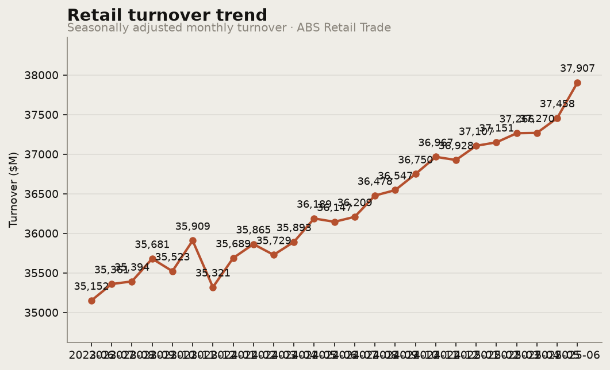

Real retail turnover from the Australian Bureau of Statistics — total demand across every shop and café in the country, by month, by category, and by state. This is the demand signal that drives inventory, staffing and reorder decisions. No synthetic or modelled numbers.
This is the official measure of retail demand. Food retailing is the biggest slice at $15.0bn, but the fastest movers this month were household goods (+2.3%) and department stores (+1.9%), while cafés & takeaway slipped -0.4% — the first sign of shoppers rotating from eating-out back toward the home. Growth is widest in NSW and the ACT (+1.6%) and slowest in WA (+0.3%). The call: demand is still climbing, but the mix is shifting — weight inventory and staffing toward household goods and watch discretionary dining.
| Category | Turnover | Share | MoM |
|---|

